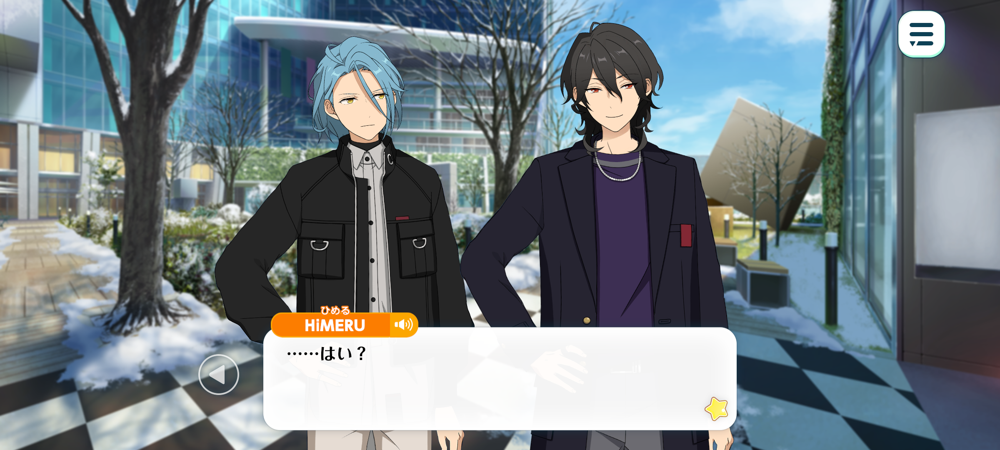
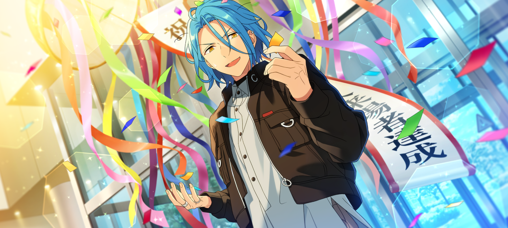
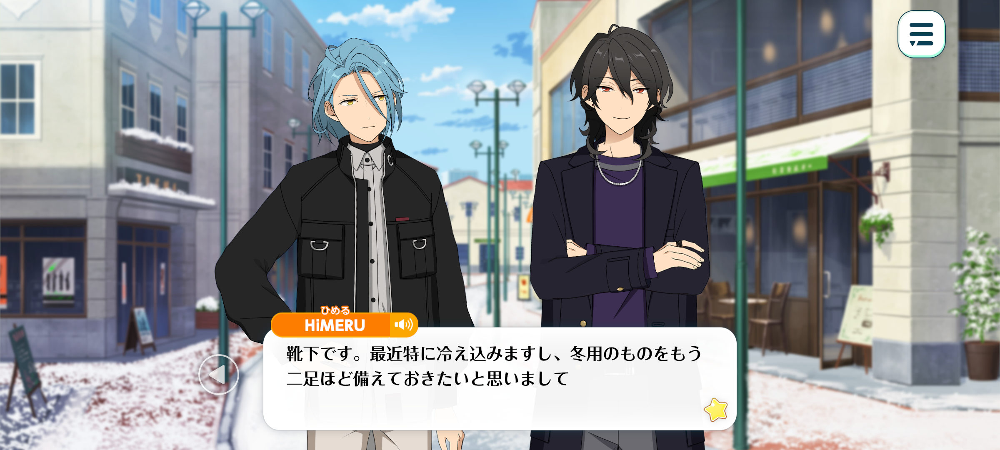

Scout! LUCKY SCRAMBLE
Fortunate Heartthrob – Chapter 5



Rei: ...Now then. It would be rather useful to gather some material for our next recording, so I think I'll be accompanying you for a little while, HiMERU-kun.
HiMERU: ...Pardon?
Rei: Wouldn't observing your good fortune firsthand make me a better host?
And if nothing happens, well, nothing happens! Spending the day together might at least give us something interesting to talk about in the next episode.
HiMERU: —Fumu. A splendid proposal. One that HiMERU can hardly refuse.
Kaoru: Sorry, HiMERU-kun~. Rei-kun can be a little pushy when he gets an idea into his head.
I think he's got a hidden agenda, though. He's probably just trying to avoid having any more bad luck himself.
Rei: Now, now, whatever could you mean by that? I would never dream of doing such a thing.
Kaoru: Oh, you absolutely would.
HiMERU: Fufu. How forceful... No, there is someone in HiMERU's unit who employs rather underhanded and aggressive tactics. Someone HiMERU finds particularly disagreeable.
Someone HiMERU has no interest in getting involved with.
Kaoru: Ah. I see. Well, I guess you would know about pushy people, then.
HiMERU: Precisely. HiMERU wonders how that person would react upon hearing of HiMERU's good fortune...
If the rumours were to reach their ears, HiMERU can hardly imagine where he might end up being dragged off to.
To avoid such a predicament, HiMERU shall be heading into town. You're both welcome to accompany him, if you wish.
Rei: Kukuku. Well, if you insist, I shall gladly accompany you. ♪
Kaoru: Uhuh. Well, we've already spent this much time together, so now I'm curious to see how things turn out.
I promise I won't get in the way, so mind if I tag along?
HiMERU: Certainly. HiMERU may not be particularly entertaining company, but you're welcome to do as you please.
(—You want to see how things turn out, do you? HiMERU doesn't even know whether he's lucky, nor does he believe he will receive any such good fortune...)

(—What is this?)
(The moment HiMERU steps into the shopping mall, he hears a commotion overhead. Looking up, he finds streamers and confetti raining down...)
(He can even hear fanfare and party poppers going off from every direction.)
(What on earth has HiMERU done? No, more importantly, what on earth is happening to HiMERU...?)
Rei: Oh my... What a splendid reception! This is the first time I've ever witnessed such a spectacle. ♪
Kaoru: Right? Me too! It's amazing that five million people have visited this place, huh? ♪
Rei: Well, what's even more amazing is that HiMERU-kun just so happens to be the five-millionth visitor!
HiMERU: ...Excuse me. You’re the general manager of this shopping mall?
You'd like to present HiMERU with a bouquet and a commemorative gift? Ah... Thank you very much...
Rei: Even if you're bewildered, you could at least give us a little more of a reaction! Something like, "Uwaa☆! I'm the five-millionth visitor?!"
HiMERU: To be perfectly honest, HiMERU is more bewildered by the applause and celebration from everyone around him. Isn't all this rather excessive?
Kaoru: Well, you can't exactly help becoming the centre of attention in a situation like this. Look, even the general manager has come over to present you with a commemorative gift.
(—HiMERU cannot simply ignore all of this. He'll accept the gifts and make a swift exit.)
…(Takes the commemorative gift.)
—Thank you very much. HiMERU wishes this shopping mall continued success.
HiMERU will be sure to visit again.

Rei: HiMERU-kun, what have you decided to purchase from this shop?
HiMERU: Socks. It's been particularly cold lately, so HiMERU thought it best to stock up on a couple of extra pairs of winter socks.
Kaoru: Ah, I like that brand too! It's nice how they manage to combine good design with practicality. ♪.
HiMERU: Yes, HiMERU quite agrees.
—Excuse me. HiMERU will be paying electronically.
Rei: ...Hm? What was that sound?
HiMERU: HiMERU's phone. "Full refund! Congratulations, you've won big!"...?
Kaoru: Isn't that part of their electronic payment campaign? Getting your entire purchase refunded is pretty amazing!
The most I've ever won back is five percent. Looks like HiMERU-kun really is having a lucky day, huh?
Rei: ...Umu. HiMERU-kun certainly seems to be in the midst of a lucky streak.
How extraordinary! To win the grand prize after only a handful of purchases...
HiMERU: ...Sigh.
(Why? Just why do these strange things keep happening to HiMERU...?)